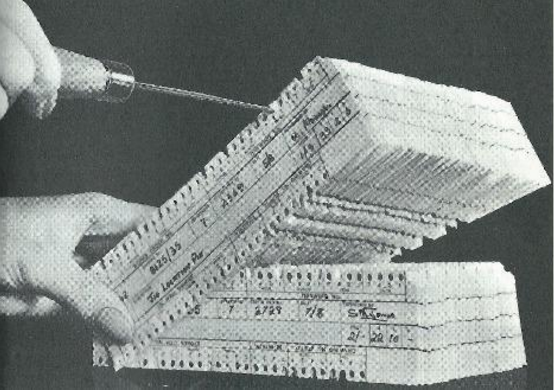
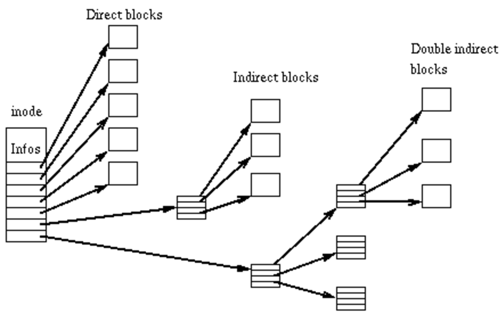
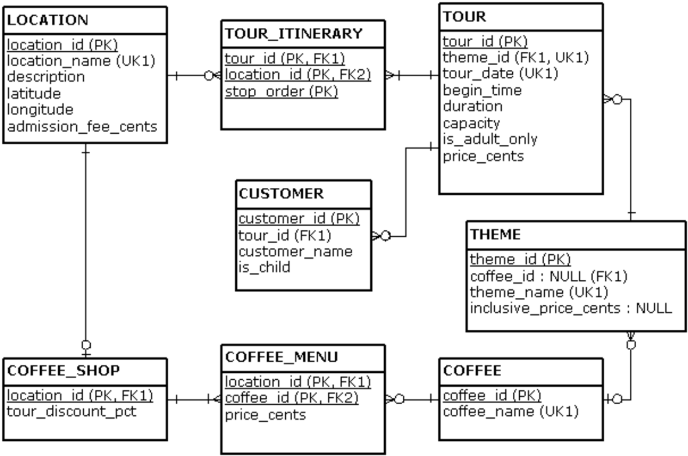
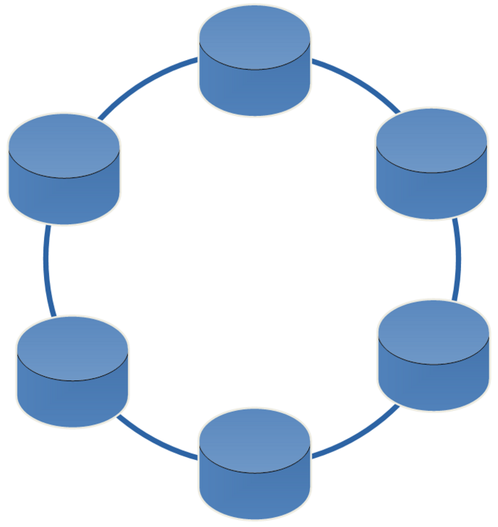
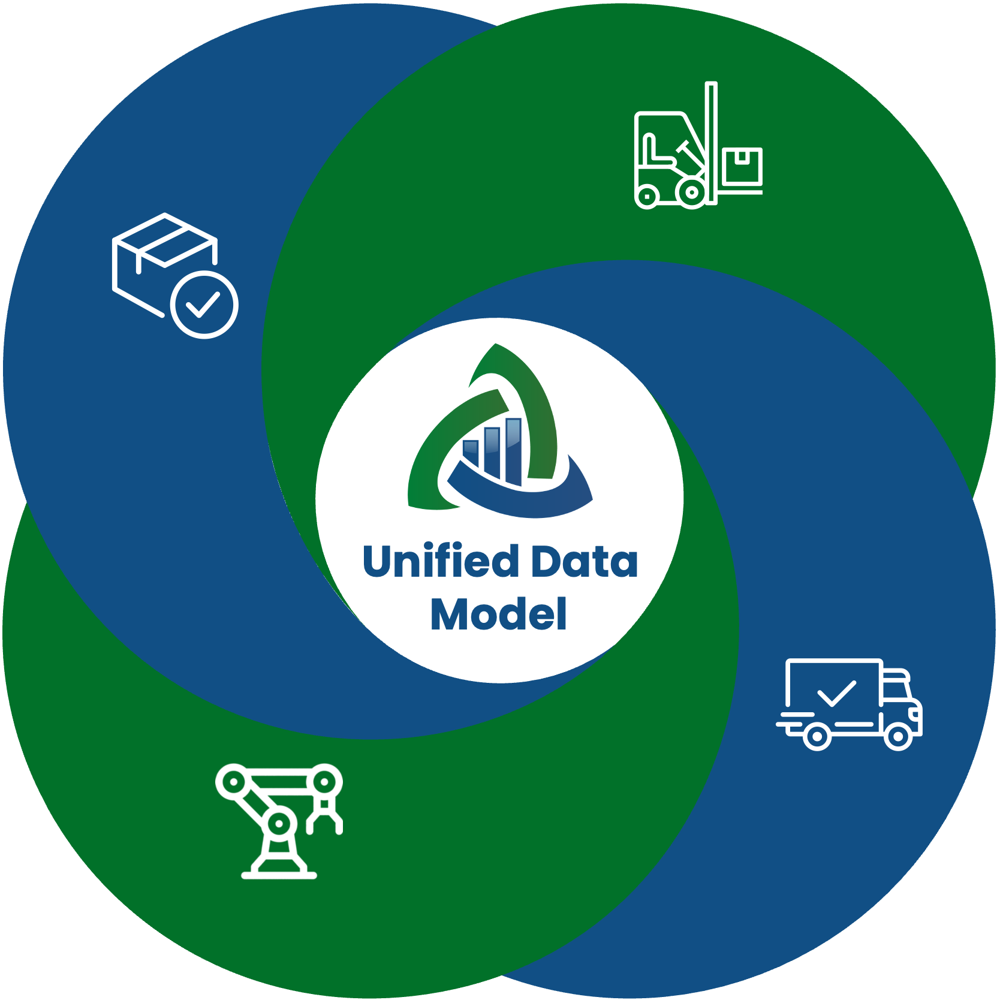
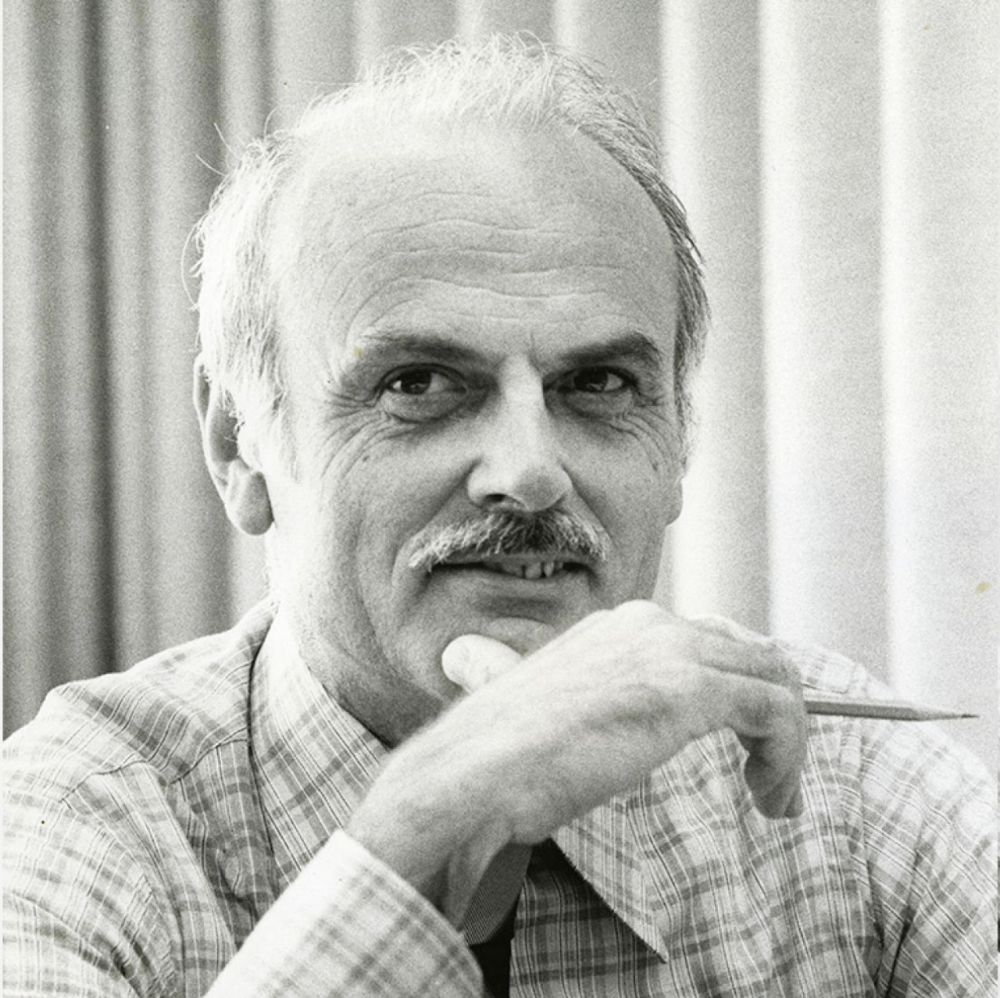
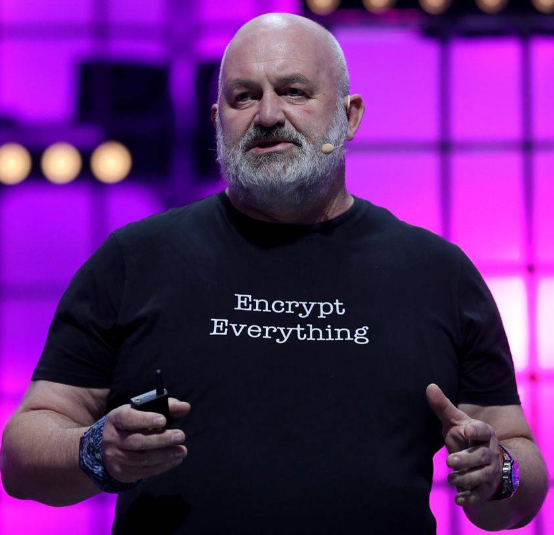

From RDBMS to NoSQL
at Enterprise Scale
Unified Model Theory · 15-minute edition
Rick Houlihan | Field CTO, Oracle Data & AI Platform
Fifteen minutes, one idea: the fight between relational and NoSQL was the wrong fight. Who I am, in ten seconds : I ran the largest relational-to-NoSQL migration in history at Amazon and built the single-table design patterns for DynamoDB. Then I spent years at MongoDB teaching Fortune 500 teams document modeling. Now I am at Oracle. I have sat in every seat in this theater.What you will leave with : why Amazon left relational, why most NoSQL projects stall, what Unified Model Theory is, and what we invest to get your teams across the gap.The promise : no product tour. History, physics, and one framework you can use on Monday.Pace : about a minute per slide. The timeline and the adoption curve are the two places to slow down.Land: I have seen this movie before. Let me show you how it ends.
Amazon's Great Migration: Why NoSQL?
Founded in 1995
Built on monolithic services and Oracle databases
$5B Company in 2005
When service-oriented architecture became the internal standard
By 2018: Scale Breaking Things
3K Oracle instances10K App services25K Developers
RDBMS Cost: A Big Line Item
Largest Oracle license in the world • High infrastructure TCO
Amazon was not "born in the cloud". It was born on monoliths and Oracle, and scale broke it. 1995 : a monolithic web store on relational databases. Completely normal for the time.2005 : a $5B company, and service-oriented architecture became the internal standard. Every team owned its services, and every service owned its data.2018 : 3,000 Oracle instances, 10,000 application services, 25,000 developers. At that scale everything that can break does: capacity planning, failover, schema changes, cost.The line item : the largest Oracle license in the world, plus the infrastructure to run it. When a single bill is that big, someone asks the question on the red tile.The irony I want you to hold : Amazon moved off Oracle onto NoSQL, and I helped lead that move. Relational was not wrong. It was being used to serve access patterns it was not tuned for, at a cost that grew with every service. Hold that thought, because the engine Amazon left has since changed shape.Land: "Maybe a better way?" was the right question. NoSQL was the best answer available in 2018. It is not the best answer available today.
Timeline of Database Technology
Data Pressure Through the Ages
Data Pressure
~100,000 BC
Human Brain
~3000 BC
Ledgers
1890s
Punch Cards
1950s
Magnetic Tape
1970s
Block Storage
1980s
RDBMS
2000s
Distributed NoSQL
2015+
Polyglot
Persistence
📊
SQL
📄
Doc
🔗
Graph
📈
Time
🎯
Vector
2020s
Unified Model
Theory





Each peak = data pressure exceeding current technology. Each valley = the solution.
Every big shift in data technology follows the same rhythm: pressure builds, the old tool breaks, a new tool resets the curve. Step through it: each click adds one era.Step 1, the human brain : the first database. Great at relationships, terrible at persistence.Step 2, ledgers : about 5,000 years ago we wrote it down. Persistence solved; pressure drops.Step 3, punch cards : the 1890 US census was drowning in data. Hollerith's machine-readable cards turned a decade of tabulation into a couple of years.Step 4, magnetic tape : 1950s. Faster, but sequential. You read the whole tape to find one record.Step 5, block storage : 1970s. Random access. Now you can jump to the record you want.Step 6, RDBMS : 1980s. Storage was the most expensive thing in the data center, so we normalized to store every fact exactly once and paid in CPU at read time. A brilliant trade for its economics.Step 7, distributed NoSQL : 2000s. The economics flipped: storage got cheap, CPU and scale got expensive. So we denormalized, pre-joined data into documents, and scaled out.Step 8, polyglot persistence : 2015 onward. One database per access shape: SQL, documents, graph, time series, vectors. The highest peak on the chart, and it is the one most of you are living in right now.Step 9, Unified Model Theory : the 2020s valley. Not one more database, but a way to model once and serve every shape from one engine.Land: each peak is data pressure exceeding the technology. Each valley is the solution. Every valley so far was a new tool. This one is a new way of modeling.
Codd Saw It Coming

EDGAR F. "TED" CODD
"A Relational Model of Data for Large Shared Data Banks", 1970
"...normal form is not only an advantage for storage purposes but also for communication of bulk data between systems which use widely different representations of the data ."
One logical model, many physical representations.
"...extra storage space and update time are consumed with a potential drop in query time for some queries."
Denormalization: pay on write and storage, save on read.
NoSQL / Document SQL / Relational Optimized for compute Optimized for storage Denormalized, hierarchical Normalized, relational Instantiated views Ad hoc queries Scale horizontally Scale vertically Built for OLTP at scale Good for OLAP
Oracle AI Database 26ai: both columns, one copy of the data, with JSON Relational Duality.
None of this is new. Ted Codd wrote the trade-off down in 1970. Quote one : Codd says normal form is valuable not just for storage, but for moving data between systems that use "widely different representations." Read that again. The father of relational was describing one logical model with many physical representations. That is the core of what I will show you in a few minutes.Quote two : when you store redundant copies, you pay extra storage and update time, and you may get faster queries. That sentence is the entire NoSQL bargain: denormalize, pay on the write, win on the read. Codd wrote it 40 years before anyone said "document database".The table: when does NoSQL fit? When you are optimizing for compute rather than storage, when the access patterns are known and repeated, and when you need OLTP at scale. Relational shines when the questions are ad hoc. Neither column is wrong. They are tuned for different physics.Define the terms for the room : OLTP is the high-volume transactional traffic, the clicks and the orders. OLAP is analysis: the questions nobody planned for.The 26ai point : you no longer have to pick a column per database. Duality views let one copy of the data serve both sides. Be precise here: the trade-off does not vanish. Assembling a document from tables at read time costs more than reading a pre-built blob. What you get in return is zero write amplification, no copies to keep in sync, and an optimizer that does the work instead of your application.Land: Codd gave us the trade-off. We spent 15 years picking one side of it per database. Now we can choose per access pattern.
Access Patterns Drive Cost
Access pattern: a question your app asks of the data, and how often it asks it.

Werner Vogels
CTO, Amazon
At Amazon in 2017:
20%
Range from a single table
50%
Of infrastructure served the last 10%
90% of queries are simple lookups. Document patterns optimize for the common case.The ERD still matters: every workload is relationships. Access patterns decide how you read them.
Here is the data point that launched Amazon's migration, and it is the most important number in this talk. Define it first : an access pattern is a specific question the application asks, like "get this customer's open orders", together with how often it asks.Werner's numbers, Amazon 2017 : 70% of queries touched a single row. Another 20% read a range of rows from a single table. So 90% of the traffic was simple lookups that never needed a join.The punchline : up to half of the infrastructure existed to serve the last 10%, the complex, ad hoc queries. We were sizing the whole fleet for the rare case.Why documents won that round : if 90% of your reads are "give me this thing and everything about it", store it the way you read it. One lookup, one round trip. That is what document patterns optimize.But do not overcorrect : every workload is relationships. Social networks, document management, process control, IT monitoring, data lakes: all of them are entities connected to other entities. NoSQL does not mean non-relational. The ERD still matters. What changes is how often you traverse each relationship, and that is what should drive the physical design.Land: know your access patterns before you pick your shapes. The 90% tells you how to store it. The 10% tells you why you still need relationships.
The False Choice
🔥 What we were told
Choose relational → object-to-table mismatch Choose documents → duplicated data drifts apart Need graph ? → add a graph store + sync Need time series ? → add another store + CDC Need vectors ? → add a vector store + pipeline
✓ The InsightDocuments, graphs, time series, vectors and relations are not competing paradigms.
They are orthogonal projections of the same underlying truth.
This was a modeling problem , not a technology problem. Model once. Project the shapes your consumers need.
For 15 years the industry handed architects a menu of false choices. Choose relational , and your developers fight the mismatch between the objects in their code and the rows in your tables. That fight is why ORMs exist.Choose documents , and you copy the same fact into many documents. Update one copy and miss another, and your data now disagrees with itself. Engineers call that an update anomaly.Need graph, time series, vectors? The answer was always "add a database and a pipeline to keep it in sync".The insight : these are not rival paradigms. Take one order. In the orders table it is a row. In your API it is a document with the customer and line items embedded. In a graph it is an edge between a customer and a product. In a time series it is a point on the revenue curve. In a vector index it is a neighbor of similar orders. Same fact. Five shapes.Orthogonal just means independent: the shape you serve does not have to dictate the way you store the truth.Land: this was never a technology problem. It was a modeling problem. Model once, and project the shapes your consumers need.
The Polyglot Persistence Problem
MongoDB
Documents
Neo4j
Graph
InfluxDB
Time Series
Pinecone
Vectors
PostgreSQL
Analytics
5 CDC Pipelines • 5 Consistency Models • 5 Failure Modes
AI / RAG
Application
Needs: vectors + docs +
graph + time series + joins
in ONE query
5 Network Hops
Eventual Consistency
Stale Context for AI
HALLUCINATIONS
with authority
Five databases. Five sync pipelines. AI hallucinates on stale context.
This is what the false choice built: polyglot persistence, a database for every shape. Walk the top row : MongoDB for documents, Neo4j for graph, InfluxDB for time series, Pinecone for vectors, PostgreSQL for analytics. Each one is good at its job. That is not the problem.The red bar is the problem : five change-data-capture pipelines copying data between them. CDC just means "watch one database for changes and replay them into another". Five pipelines means five consistency models and five ways to fail at 3 a.m.Now add AI : a RAG application, retrieval-augmented generation, needs the vector neighbors, the document, the relationships and the recent history in one answer. In this architecture that is five network hops, and each store is at a different point in time.Eventual consistency plus conflicting facts equals a confident wrong answer . The model does not know the inventory system is 8 seconds behind the order system. It just answers, with authority. When agents take actions instead of answering questions, that stale context becomes a business incident.The hidden tax : every extra database is another attack surface, another CVE list, another patch cycle, another authentication model, another team.Land: AI did not create the polyglot problem. It exposed it.
Unified Model Theory
Model the domain. Project the access.
Canonical Form
The logical model
Entities
Properties
Relationships
What the business is.
Not a table design.
project
Projections
How it is physically stored
Rows on tables
Embedded documents
Graph nodes + edges
Relational is ONE
projection.
query
Access Surfaces
How applications ask
SQL
SQL/JSON
SQL/PGQ (graph)
MongoDB API
Same data, every surface.
render
Projected Shapes
What consumers read
API document
Report rows
Graph paths
RAG context for AI
Shaped per consumer.
One engine · one transaction · one consistency model: every write lands once, every shape sees it
This is the framework. Read it left to right, and notice that relational is only one box in the second column. Canonical Form is the logical model: the entities your business cares about, their properties, and the relationships between them. Customer, order, product, and how they connect. It is what the business is. It is NOT a table design. People hear "canonical" and think "normalized tables". That is the mistake I want to retire.Projections are how that model is physically stored. Rows on tables are one projection. Embedded documents, as JSON collections or duality views, are another. Graph nodes and edges are another. You choose projections per access pattern, the way Codd's quote described.Access Surfaces are how applications ask: SQL, SQL/JSON, SQL/PGQ for graph pattern matching, and the MongoDB API. Your existing Mongo drivers point at the same engine.Projected Shapes are what the consumer actually receives: the JSON document an API returns, the rows a report reads, the path a fraud graph walks, the context a RAG pipeline hands to a model. A query on an access surface renders the shape.The bottom bar is the point : one engine, one transaction, one consistency model. Write a document through a duality view and the engine decomposes it into the underlying rows in the same transaction. Every other shape sees the change immediately. No CDC, no copies.Be honest about the cost : assembling a document from rows at read time costs more than reading a pre-built document. A join is never free. What you buy is zero write amplification, no sync pipelines, and the cost-based optimizer doing the work your application used to do.Land: model the domain once. Project the access for every consumer.
One Engine, Every Shape
One query, five shapes
SELECT JSON {
'context' : v.chunk_text,
'product' : (SELECT JSON {...} FROM products p
WHERE p.id = v.product_id),
'related' : (SELECT JSON_ARRAYAGG (...)
FROM GRAPH_TABLE (product_graph
MATCH (p)-[:RELATED]->(r)
COLUMNS (r.name, r.category))),
'trends' : (SELECT JSON {...} FROM orders o
WHERE o.order_date > SYSTIMESTAMP - 30 )
}
FROM product_vectors v
ORDER BY VECTOR_DISTANCE (v.embedding, :query)
FETCH FIRST 10 ROWS ONLY ;
Infrastructure you delete
✗
MongoDB → Duality Views + MongoDB API
✗
Neo4j → SQL Property Graph
✗
InfluxDB → Temporal queries
✗
Pinecone → AI Vector Search
✗
CDC pipelines + ETL jobs → Eliminated
✗
Saga patterns → ACID across all models
Vectors + documents + graph + time series + relational in ONE query. ONE transaction. ONE consistency model.
Here is what "one engine" means in practice: the RAG query from the polyglot slide, as a single statement. Walk the query : start from vector similarity on the embeddings, the ten nearest chunks to the user's question. For each one, pull the product facts relationally, walk the related-products graph with GRAPH_TABLE, which is SQL's standard graph syntax, and summarize the last 30 days of orders as a time series. Return it all as one JSON document.Why that matters for AI : every piece of context comes from the same snapshot of the data, in the same transaction. The model never sees a vector that points at a product that was deleted a second ago.Precision on cost : the engine still does the work of combining these. Nothing about it is free. The difference is that the cost-based optimizer plans it, inside one engine, instead of your application stitching five network calls together.The right column is the business case : each line is a system you stop buying, patching, securing and staffing. Documents through duality views and the MongoDB API. Graph through SQL property graphs. Time series with temporal SQL. Vectors with AI Vector Search. The CDC and ETL pipelines between them disappear because there is nothing to copy. Saga patterns, the compensating-transaction gymnastics you write when there is no shared transaction, become plain ACID.Land: this is not a better way to manage five databases. It is a way to need one.
Amara's Law, Meet the Adoption Curve
"We overestimate the impact of a technology in the short run and underestimate it in the long run." Roy Amara
TIME
IMPACT
EXPECTATION
the hype
ADOPTION
the real impact
Overestimated
in the short run
Underestimated
in the long run
Innovators
Early adopters
The chasm
Early majority
Late majority
Laggards
1
2
3
4
5
1 Short-run hype
NoSQL promised to replace relational .
2 The chasm
Most NoSQL projects stall where theory meets production: data modeling, relationships, consistency .
3 What gets teams across
Understanding the patterns and the physics . Not new tools.
4 The long run was underestimated
One engine that speaks every data model , with full transactional integrity.
5 Here now
Converged data + UMT in Oracle AI Database 26ai .
The patterns get you across the chasm. Enablement is how we get your teams there.
Click a number, or press → to step through. Esc closes a callout.
Roy Amara was a futurist at the Institute for the Future. His law explains the last 15 years of databases better than any analyst report. Read the quote, then step through the five numbers. Each click opens one talking point.The chart : time runs left to right, impact runs up. The dashed orange line is expectation, the hype. The solid green line is adoption, the real impact. Where orange is above green, we overestimated. Where green climbs above orange, we underestimated. Along the bottom are the classic adoption segments, with the chasm between the early adopters and the early majority.1. Short-run hype : around 2010, NoSQL was going to replace relational. Schemaless, infinitely scalable, joins were obsolete. Conference keynotes said relational was legacy. I was on some of those stages. Expectation shot straight up.2. The chasm : then teams took it to production. Most NoSQL projects stalled right here, where theory meets production. Three things broke them: data modeling, because nobody taught them to model for access patterns; relationships, because the data was still relational and they had thrown away the tools for it; and consistency, because "eventually" is not an answer when money moves. Expectation crashed below reality. Moore called this the chasm; Gartner calls it the trough.3. What gets teams across : not another tool. Every team I have seen cross this chasm did it by understanding the patterns and the physics: why a document should be shaped by how it is read, what a write costs, when to embed and when to reference. At Amazon that understanding is what got thousands of workloads across. The tools mattered less than the people knowing how to use them.4. The long run was underestimated : the hype promised "replace relational". Nobody predicted what actually happened: one engine that speaks every data model, documents, relational, graph, vectors, time series, with full transactional integrity across all of them. Look at the green curve: real impact ends up higher than the hype ever promised. That is Amara's second half.5. Here now : this is not a roadmap slide. Converged data and UMT ship today in Oracle AI Database 26ai. The long run has arrived. For most of you it is a software upgrade on a platform you already run.Transition, read it straight: "The patterns get you across the chasm. Enablement is how we get your teams there."
The Enablement Program
Our investment. Your return.
What we put in
Complimentary · On-site
Hands-on labs on the converged databaseArchitecture reviews of your real workloadsTrain-the-trainer path to your own Center of ExcellenceNo slideware. Your developers build.
The program
Built to outlive the engagement
1
2
3
4
Capability compounds
Hands-on
labs
Architecture
reviews
Train-the-
trainer
Center of
Excellence
Your people keep teaching after we leave
What it returns: for you
Evidence-based decisions on your own workloadsModernize on what you own: 26ai is a software upgrade, not a migrationFaster delivery Fewer stores to run and secure
For Oracle
Adoption and expansion of the platform you already run
Proven at scale: the program I led at Amazon
This is an investment we make, because we know the return is large, for you and for us.
So how do your teams get across the chasm? Here is exactly what we put in, and exactly what comes back. What we put in (left) : this is complimentary and it happens on-site. Hands-on labs where every developer builds on a live 26ai instance: duality views, the MongoDB API, vector search, graph. Architecture reviews where we sit with your architects at a whiteboard and go through your real workloads, pattern by pattern: what to keep, what to retire, what to replace. Architecture only, no production data. And no slideware: after this talk, the slides are over.The program (middle) : four steps, and each one builds on the last. Labs, then architecture reviews, then train-the-trainer, where we certify a core group of your engineers to teach the rest, and finally your own Center of Excellence: champions, a reusable pattern library, internal office hours. The point of steps 3 and 4 is that the capability stays after we leave. That is why the line keeps climbing.The proof strip : this is not a pilot. I ran this model at Amazon: more than 25,000 developers trained, more than 4,000 workloads migrated, more than 35 cities, and zero Tier-1 issues. The zero is the number engineers care about. What made it last was train-the-trainer; the Center of Excellence kept going without us.What it returns for you (right, green) : decisions based on evidence from your own workloads, not vendor claims, including mine. Modernization on the platform you already own: if you run Oracle today, 26ai is a software upgrade, not a migration project. Faster delivery, because your developers stop building plumbing between databases. Fewer data stores to run, patch and secure.What it returns for Oracle (right, red) : I will be direct about this. When your teams are good at the converged platform, they use more of it. Adoption and expansion of the platform you already run is our return. Both sides win, and I would rather say that plainly than pretend this is charity.Land, slow down and read the banner: "This is an investment we make, because we know the return is large, for you and for us."
Model once. Serve every consumer from one source of truth.
✓ NoSQL does not mean non-relational. The ERD still matters.✓ Access patterns drive cost. Design for the 90%, keep the relationships for the 10%.✓ Relational and document are projections of one model. Model the domain, project the access.✓ AI needs one consistent truth. One engine, one transaction, every shape.
Next step: bring one real workload to a Developer Day. Hands-on labs, an architecture review, and a path to your own Center of Excellence.
◆
Oracle AI Database 26ai
Unified Model Theory, implemented.
Close on the one sentence I want you to remember, then make the ask. Read the quote : model once; project as documents, graphs, time series or relations; serve every consumer from one source of truth. That is Unified Model Theory in one breath.Four takeaways :The ask : pick one real workload, the one your team argues about, and bring it to a Developer Day. We run the labs, we review the architecture with your people, and we set you up to keep going without us.If someone asks "isn't Oracle legacy?" : the engine that runs documents, graph, vectors and relational in one transaction is the newest thing in this talk. Legacy is running five databases and five sync pipelines to fake it.Land: one truth, many shapes. Thank you.